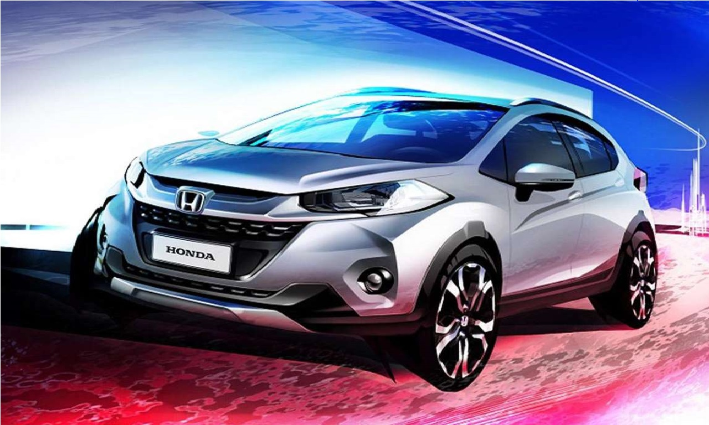
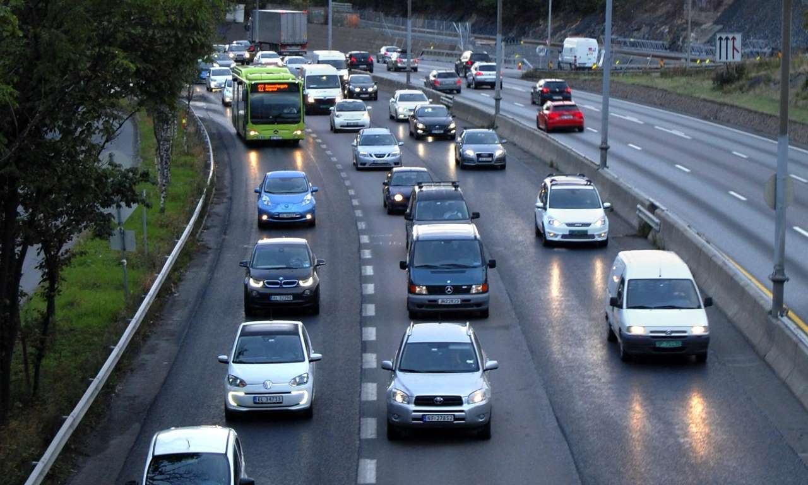

Honda has revealed the first picture of its new WR-V ('Winsome Runabout Vehicle'), which it will launch at the Sao Paulo International Motor Show 2016. While the new SUV will go on sale in South America next year, Honda is not planning to offer the car in Europe.
According to Honda Brazil, it features a “tough and urban” design, and uses the same platform as the Jazz supermini. That would make it a rival for the Nissan Juke or Renault Captur if it were made available here, sitting in the supermini-SUV segment - but the Honda HR-V already occupies that market for the brand in the UK.
The WR-V will likely be front-wheel drive only, and feature only petrol/ethanol engines as diesel is not a popular fuel in South America.
The image released does show a funky new design for Honda, with the large wheels, roof rails and sharp creases in the bodywork all giving it a youthful look. It's much more like the Nissan Juke than the HR-V in terms of styling.

© AFP/Getty Images Electric cars using the bus lane (left) during morning rush hour in Oslo, Norway.
The Guardian
Drivers of electric vehicles could be allowed to use bus lanes in five UK cities and even go first at traffic lights, to tackle illegal levels of air pollution, the government has suggested.
Launching its consultation on clean air zones to be introduced in Birmingham, Leeds, Nottingham, Derby and Southampton, the environment department said air pollution killed 50,000 people each year at an annual cost to society of £27.5bn.
Electric vehicles, which emit no pollution directly, are seen as a key way for local authorities to bring down levels of nitrogen dioxide (NO2) in the five cities, which are in breach of EU limits.
Local authorities should consider incentives to encourage people to switch to electric vehicles, said the draft clean air zone framework, published on Thursday.
These could include cheaper parking and “allowing access to bus lanes, exemptions from other restrictions such as one way systems, and priority at traffic lights for Ulevs [ultra low-emission vehicles].” But local authorities will be encouraged to consult with residents on such ideas first, an environment department spokeswoman said.
The government said it wants each city to have a mandatory charge by 2020 for dirty buses, coaches, taxis and lorries, but not private cars. Birmingham and Leeds will tackle older vans too.
Next week the environment secretary, Andrea Leadsom, faces a legal challenge from environmental law group ClientEarth in the high court over the government’s NO2 clean-up plans.
The mayor of London, Sadiq Khan, this week called the capital’s toxic air a “health emergency” as he launched proposals for a bigger and earlier clean air zone than the one planned by his predecessor, Boris Johnson. Unlike the other schemes, London’s does cover cars.
The details and workings of the zones in the five other cities, chosen by the government last December because of their NO2 levels, will be published next year.
Environment minister Thérèse Coffey said: “We need to tackle air pollution and creating clean air zones will improve the quality of life for people who live and work in our towns and cities, both now and in the future.”
The Department for Transport also announced £35m on Thursday for more electric car charging points for taxi ranks and workplaces, and a scheme to encourage uptake of electric scooters.
“While any government action on pollution is welcome, it’s no coincidence that it comes just five days before ClientEarth returns to court because of the government’s inaction on this public health crisis,” said Alan Andrews, a lawyer at the firm.
“Requiring just five cities in the UK to introduce clean air zones doesn’t solve a national problem which causes thousands of premature deaths. Other local authorities won’t introduce voluntary clean air zones unless they are made to, or paid to.”
The environment department said other local authorities could introduce clean air zones if they wished.
But Friends of the Earth said the government should financially support the zones in other towns and cities blighted by illegal levels of NO2.
Jenny Bates, a campaigner at the green group, said: “Everyone, no matter where they live, should have the right to breathe clean air. Local authorities should be supported – including financially – to introduce clean air zones across the country.”